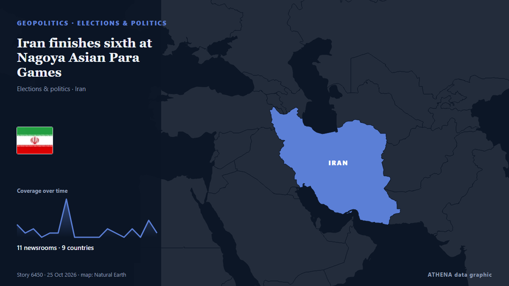

Iran finishes sixth at Nagoya Asian Para Games

Iran’s men’s wheelchair basketball team defeated Iraq 81-23 in their opening match of the 2026 Asian Para Games. von Tehran Times
Unabhängig gemeldet von 11 Medien in 9 Ländern seit dem 16. Okt., zuerst von Tehran Times; die Berichterstattung flaut ab. ATHENA stuft das Risiko als niedrig ein (1.6/10), vor allem wegen der Schwere des beschriebenen Schadens und seiner geografischen und sektoralen Reichweite. Die Konfidenz liegt bei 85 % (hoch): 11 Medien bestätigen es unabhängig, bei einer mittleren Verlässlichkeit der Quellen von 72 %. Medien nach Land: Iran (17), Japan (2), China (2). Berichterstattung: 16. Okt. bis 25. Okt., 214 Stunden.
Warum es wichtig ist: Sicherheits- und diplomatische Entwicklungen können Bündnisse, Handel und Märkte weit über die direkt beteiligten Länder hinaus verschieben.
Was sich geändert hat: 5 neue Berichte von 5 Redaktionen in den 24 Stunden bis 25. Okt..
Erste Schlagzeile: Women’s wheelchair basketball beat Cambodia at Asian Para Games
Schlagzeilen werden auf Englisch angezeigt, wie veröffentlicht.
Auf einen Blick
Ausgewählt, bewertet und geschrieben nach der veröffentlichten Methodik von ATHENA. Kein Redakteur greift in einzelne Ereignisse ein. So entsteht ATHENA ›
| 16 Oct 07:26 UTC | 3 |
|---|---|
| 16 Oct 19:26 UTC | 1 |
| 17 Oct 07:26 UTC | 2 |
| 17 Oct 19:26 UTC | 0 |
| 18 Oct 07:26 UTC | 1 |
| 18 Oct 19:26 UTC | 1 |
| 19 Oct 07:26 UTC | 9 |
| 19 Oct 19:26 UTC | 0 |
| 20 Oct 07:26 UTC | 0 |
| 20 Oct 19:26 UTC | 0 |
| 21 Oct 07:26 UTC | 0 |
| 21 Oct 19:26 UTC | 2 |
| 22 Oct 07:26 UTC | 1 |
| 22 Oct 19:26 UTC | 0 |
| 23 Oct 07:26 UTC | 2 |
| 23 Oct 19:26 UTC | 0 |
| 24 Oct 07:26 UTC | 4 |
| 24 Oct 19:26 UTC | 1 |
| 17 Oct 11:32 UTC | 0.0 |
|---|---|
| 22 Oct 07:15 UTC | 1.8 |
| 25 Oct 05:24 UTC | 1.6 |
Warum diese Zahlen
Bedeutung
Risiko
Konfidenz
Die Berichterstattung – wer berichtete, und wann
Schlagzeile wie veröffentlicht · öffnet das Original- Tehran Times · IranIran’s wheelchair basketball start on high in Nagoya 2026
- Tehran Times · IranIran blind football lose to Thailand at 2026 Asian Para Games
- Tehran Times · IranWomen’s wheelchair basketball fall to Japan in Nagoya
- Tehran Times · Iran2026 Nagoya: Iran’s men’s wheelchair basketball beat S. Korea
- Tehran Times · IranIran blind football defeat South Korea in 2026 Asian Para Games
- Tehran Times · IranIran women’s wheelchair basketball suffer loss against Thailand
- Oman Observer · OmanAl Hubaishi launches Oman’s Asian Para Games campaign
- Gazeta.uz (English) · UsbekistanPhoto report: Opening ceremony of 5th Asian Para Games Aichi-Nagoya 2026
- Tehran Times · IranIran blind football beat China: 2026 Nagoya
- Tehran Times · IranIran rout Qatar in goalball at Nagoya Para Asian Games
- Tehran Times · IranIranian girl Jami takes gold in taekwondo at 2026 Asian Para Games
- Tehran Times · IranIranian women para-athletes win gold and silver: 2026 Nagoya
- Tehran Times · IranMen’s wheelchair basketball defeat the Philippines: 2026 Nagoya
- Tehran Times · IranWomen’s wheelchair basketball beat Cambodia at Asian Para Games
- Tehran Times · IranPara swimmer Zeighaminejad seizes Iran’s third gold at Nagoya
- Tehran Times · IranFewer Athletes, Same Big Ambitions: Iran Chases Para Games Glory
- Rappler · PhilippinenGawilan bags Philippines’ first gold at 2026 Asian Para Games
- CNA (Channel NewsAsia) · SingapurWrong anthems played at Asian Para Games after mishap-marred Asian Games
- Korea Herald · SüdkoreaCho Eun-hye wins Korea's first Asian Para Games fencing gold
- RTHK English · Sonderverwaltungsregion HongkongHK wins silver in women's épée at Asian Para Games
- Mainichi (English) · JapanOda wins Asian Para Games wheelchair tennis gold, Paralympic berth
- Tehran Times · IranMen’s wheelchair basketball bag silver at 2026 Nagoya
- Tehran Times · IranIran drops four places to sixth at Nagoya Asian Para Games
- Mainichi (English) · JapanAichi-Nagoya Asian Para Games conclude with hopes for inclusive society
- Xinhua (English) — page reader · ChinaClosing ceremony of Aichi-Nagoya Asian Para Games held in Nagoya
- Mehr News (English) · IranIran finishes sixth at Nagoya Asian Para Games
- CGTN (World) · ChinaAichi-Nagoya bids farewell to Asian Para Games in closing ceremony